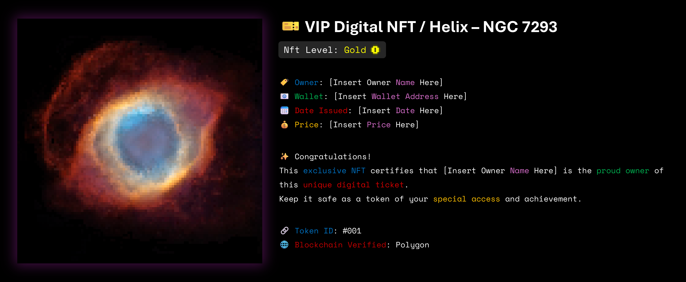

NFT: Helix Nebula / NGC 7293
“In the heart of the cosmos—where stars end their lives and from their remnants new beauty emerges—the Helix Nebula (NGC 7293) was born.”
The Helix Nebula is one of the brightest and closest planetary nebulae to Earth, located roughly 650 light-years away in the constellation Aquarius.
Because of its striking resemblance to a cosmic eye glowing in the darkness of space, it has long been nicknamed the “Eye of God.”
Its immense structure spans more than 2.5 light-years across—a distance so vast that even light, traveling at 300,000 km/s, takes over two years to cross from one edge to the other.
Resources:
Download the TXT file containing the artwork’s HEX color palette: [Download]
View the full collection on OpenSea: [Click to open]
Details of the Phenomenon
"Far beyond a simple digital image, this NFT represents an artistic rebirth of one of the cosmos’ most iconic marvels."
- The creation of this piece spanned over five months, reflecting a meticulous design process.
- Crafted at a resolution of 100×100 pixels (10,000 total pixels), it embodies a deliberate pixel-art aesthetic.
- Approximately 4,800 distinct colors were carefully selected from the original photograph to preserve the cosmic depth and visual richness of the nebula.
Blockchain
- This NFT is securely minted on the Polygon blockchain.
- It has been created following the ERC-1155 standard, ensuring compatibility and flexibility within the NFT ecosystem.
- Ownership and transfer history are recorded immutably and transparently on-chain, guaranteeing the authenticity and long-term security of the artwork.
The Human Aspect
- A portion of the proceeds from this NFT will be donated to humanitarian causes, bringing joy and support to those in need.
- By purchasing this piece, you not only acquire a unique work of art, but also actively participate in a meaningful charitable initiative.
Special Privileges Reserved for the Buyer
- Receive an exclusive digital ownership card, uniquely assigned to the holder of this NFT.
- Enjoy a 20% discount on your next purchase from the same NFT collection.
- This piece offers significant potential for artistic and collectible value appreciation over time.
"NFT: Helix Nebula / NGC 7293 is a journey from the stars to the blockchain—a seamless bridge connecting science, art, and technology.
By owning this piece, you do not merely possess an image; you hold a cosmic eye that shines across the endless darkness of the universe."
Digital Card Preview

If you have any questions or need further information, please feel free to reach out.
Email: amiraazami0206@gmail.com